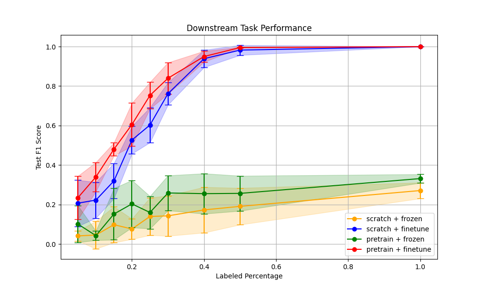

🟢 Fonctionnement Normal (Sain)
🔴 Défauts de Bille
🟠 Défauts de Bague Interne
🟡 Défauts de Bague Externe
📊 Analyse de Performance
Performance en Classification (Fine-tuning)

Score F1 vs. Pourcentage de données étiquetées
Comparaison des performances de classification selon 4 configurations :
- 🔴 Backbone pré-entraîné (pretrain) + Fine-tuning complet (finetune)
- 🟢 Backbone pré-entraîné (pretrain) + Backbone figé (frozen)
- 🔵Backbone non pré-entraîné (scratch) + Fine-tuning complet (finetune)
- 🟠 Backbone non pré-entraîné (scratch) + Backbone figé (frozen)
Cette analyse démontre l'efficacité du pré-entraînement, particulièrement dans les régimes de données limitées.